לקורס מערכות הפעלה נצטרך לינוקס על המחשב, עם התוכנה הזאת הכי קל להריץ אותו ואפשר גם להריץ וינדוס למי שרוצה, התוכנה הזאת עולה כסף אבל ההסבר יראה איך עוקפים את זה
שלב ראשון: נתקין את התוכנה
.נוריד את התוכנה מהלינק הזה
install נלחץ על
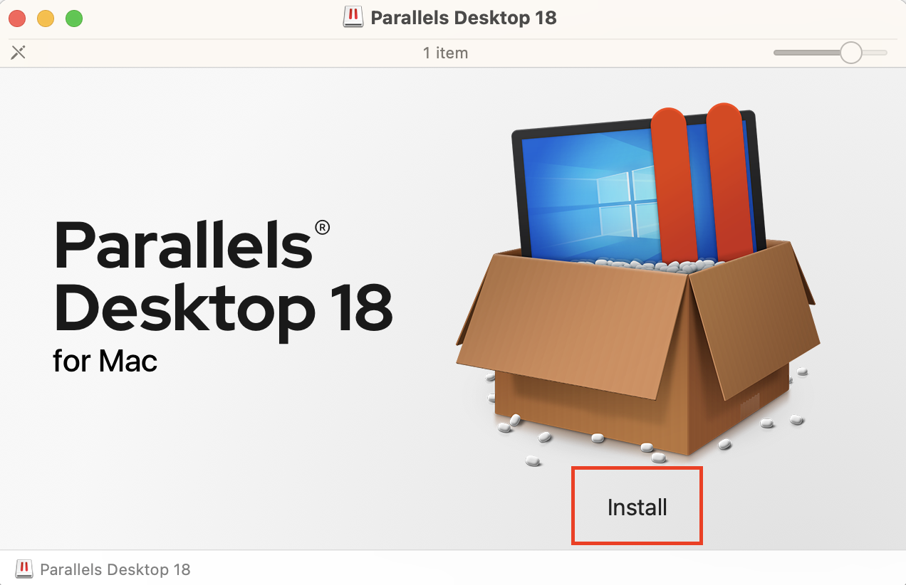בשלב הזה נתבקש להתקין גרסה עדכנית יותר, אנחנו מסרבים בכל שלב
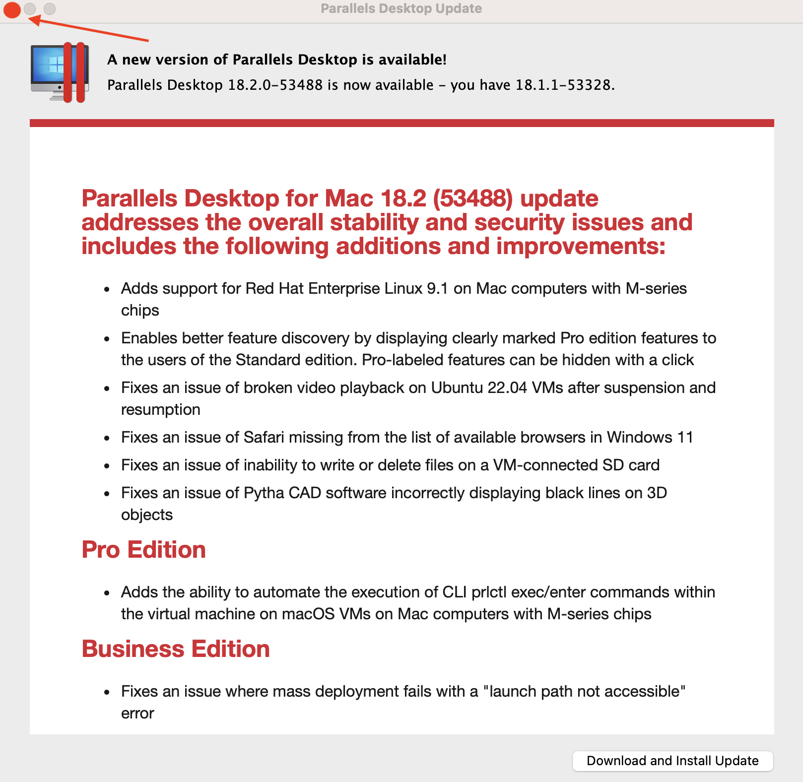הוא יבקש שוב להוריד גרסה עדכנית, מסרבים שוב
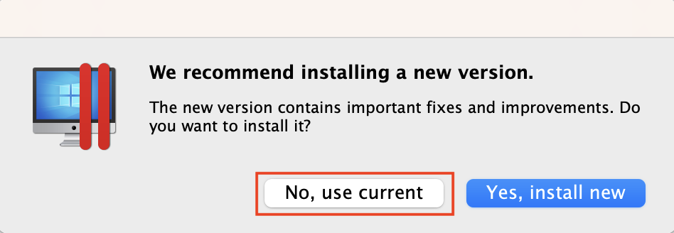גם אחרי שנסיים את כל התהליך, כל פעם שנפתח את התוכנה הוא יבקש לעדכן אותה, בכל פעם נסרב לעדכן
אחרי שסירבנו לעדכן את התוכנה, נקבל הצעה להתקנת וינדוס, נדלג עליה
(מניסיון אישי, וינדוס על מאקים חדשים לא עובד טוב)
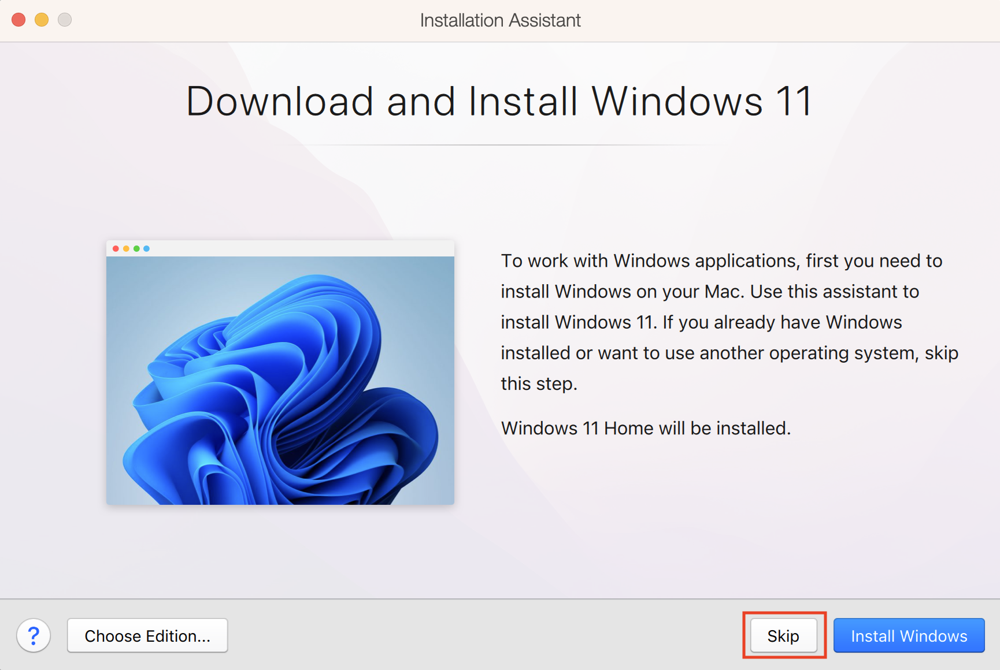Ubuntu linux :שלב שני
אחרי שסיימנו להתקין את התוכנה, נלחץ על אובונטו לינוקס בצד שמאל למטה ואחר כך על המשך
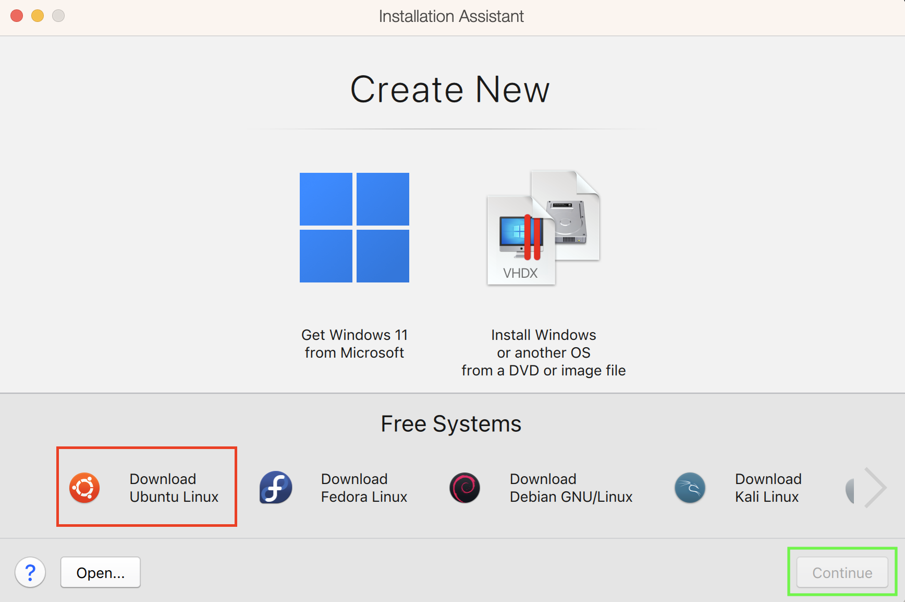נלחץ הורדה
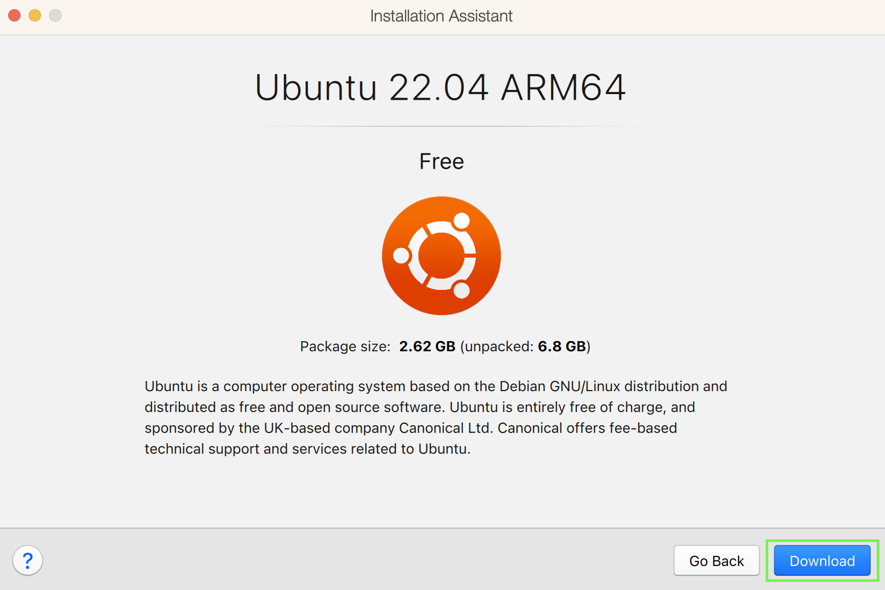אחרי שאובונטו ירד, יפת מסך כניסה למשתמש
לא לנסות להתחבר או להירשם
שלב 3: הכנה
יש כמה דברים שנצטרך לסדר לפני שנוכל להפעיל את התוכנה
הדבר הראשון שנצטרך לעשות הוא לתת לטרמינ שלנו גישה מלאה לקבצים במחשב, מבצעים את זה מההגדרות במאק, נלך להגדרות->אבטחה ופרטיות->גישה מלאה לדיסק->נפעיל את המתג ליד הטרמיל
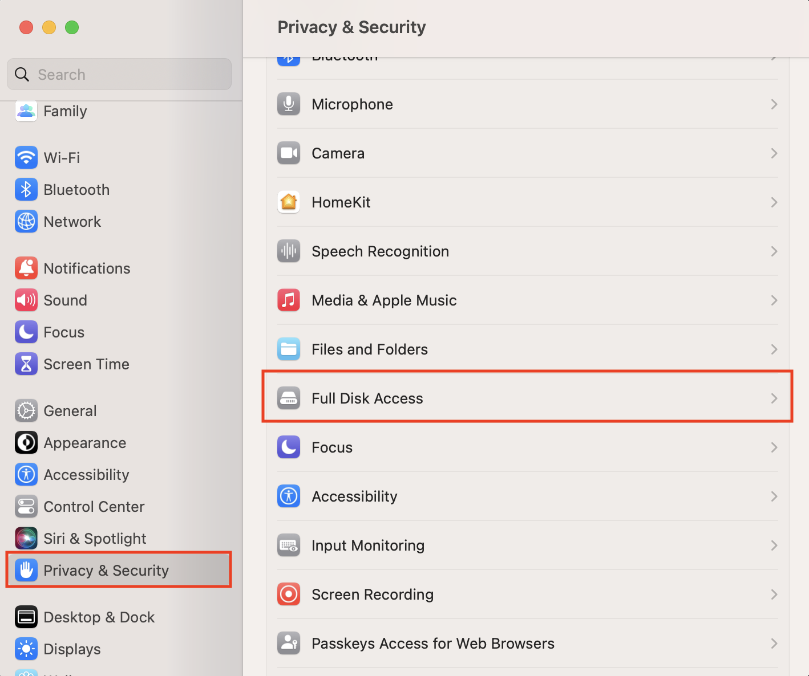ונפעיל את הגישה לטרמינל
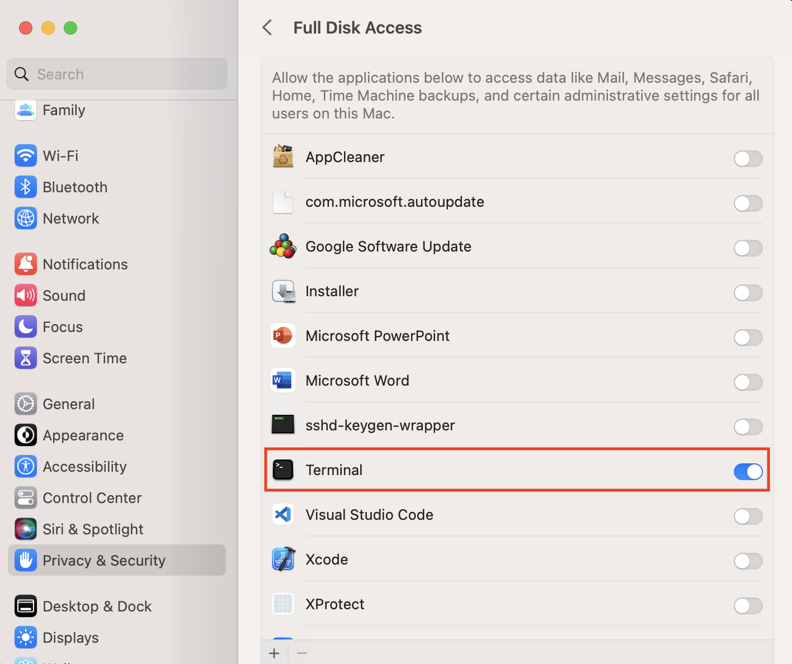הדבר השני שנצטרך לעשות הוא להתקין את עורך הקוד של אפל, אנחנו צריכים אותו כי יש בו חבילות חשובות שמאפשרות למאק להריץ קוד בטרמינל, נוכל להתקין אותו בעזרת הפקודה הבאה בטרמינל(חלון טרמינל חדש)
xcode-select --install
למי שכבר יש את התוכנה על המחשב יקבל את ההודעה הבאה
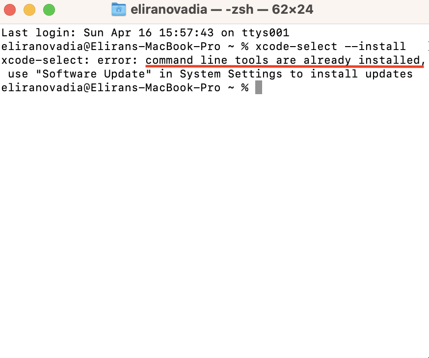שלב 4: הפעלה
לפני שמתחילים נוודא שהתוכנה פועלת ברקע, נוכל לדעת שכן אם יופיע לנו האייקון שלה בשורת המצב
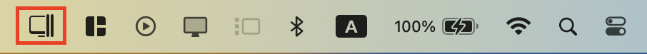אם היא לא פועלת נפעיל אותה מחלון האפליקציות שלנו, היא ניראת ככה
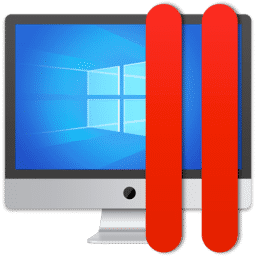נוריד את הקבצים לצורך ההפעלה מהקישור הזה
נלך לתיקית ההורדות שלנו ונזהה את התיקיה שהורדנו, נלחץ עליה במקש ימני במעכבר ונבחר
new terminal at folder
נשים לב שנפתח לנו חלון טרמינל מוכן להפעלת פקודות על התיקיה שבחרנו קודם, עכשיו נריץ את הקוד הבא
chmod +x ./install.sh && sudo ./install.sh
שהתקנו את אובונטו נפתח לנו מסך שחור, עכשיו אפשר ללחוץ עליו ולהפעיל את המערכת
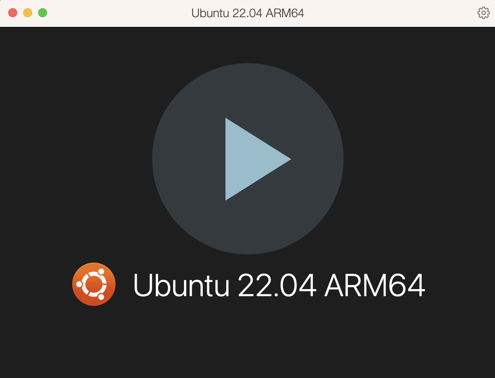אחרי שהמערכת עלתה נלחץ על הכפתור
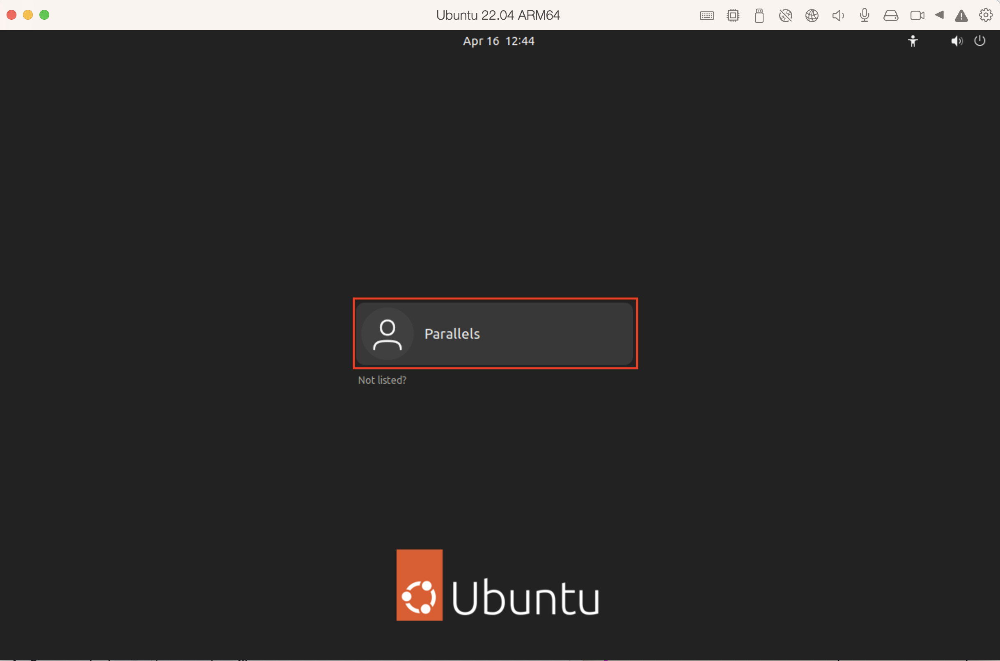בלשב זה אנחנו צריכים לקבוע סיסמה חדשה למערכת ההפעלה שלנו,נתבקש לכתוב אותה פעמיים,יש לשים לב להקפיד על מספר תווים מספק
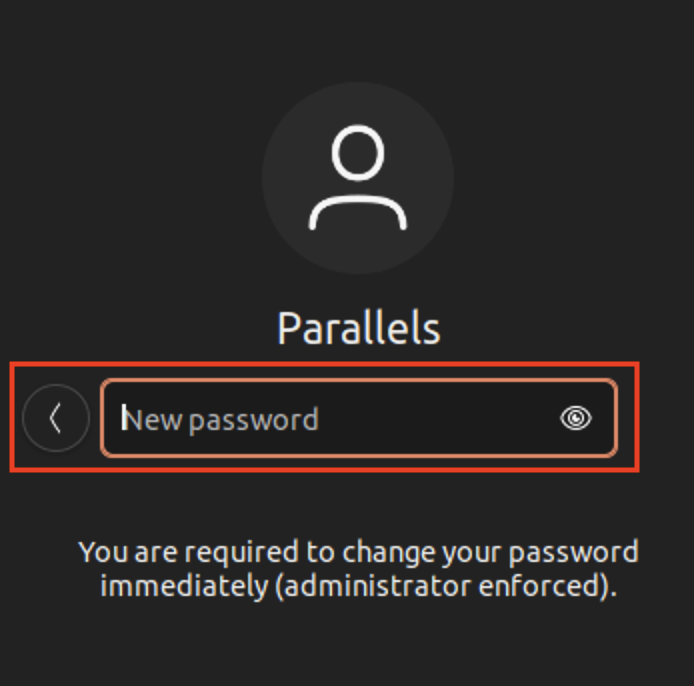אחרי שהתחברנו למערכת ההפעלה שלנו, נתבקש להתקין חבילת קבצים הכרחית, נרשום את הסיסמה שהרגע בחרנו ונתקדם
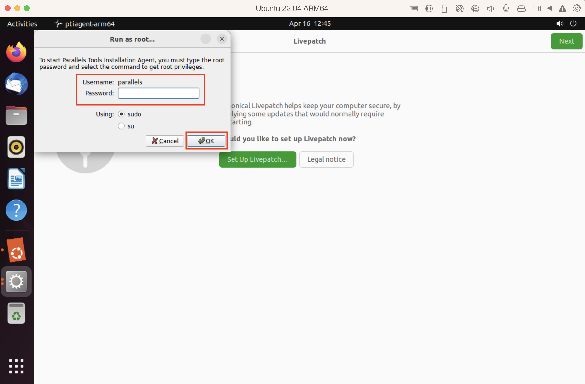נמתין לסיום ההתקנה

אחרכך נלחץ על הפעלה מחדש
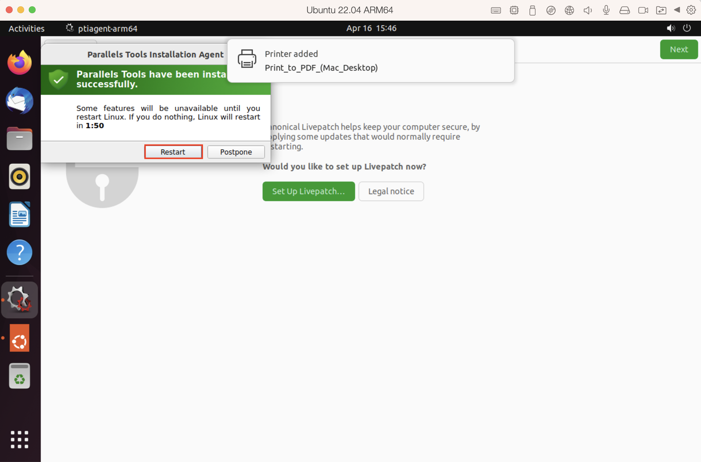נתחבר שוב למערכת שלנו ונתקדם עם המסך מימין למעלה
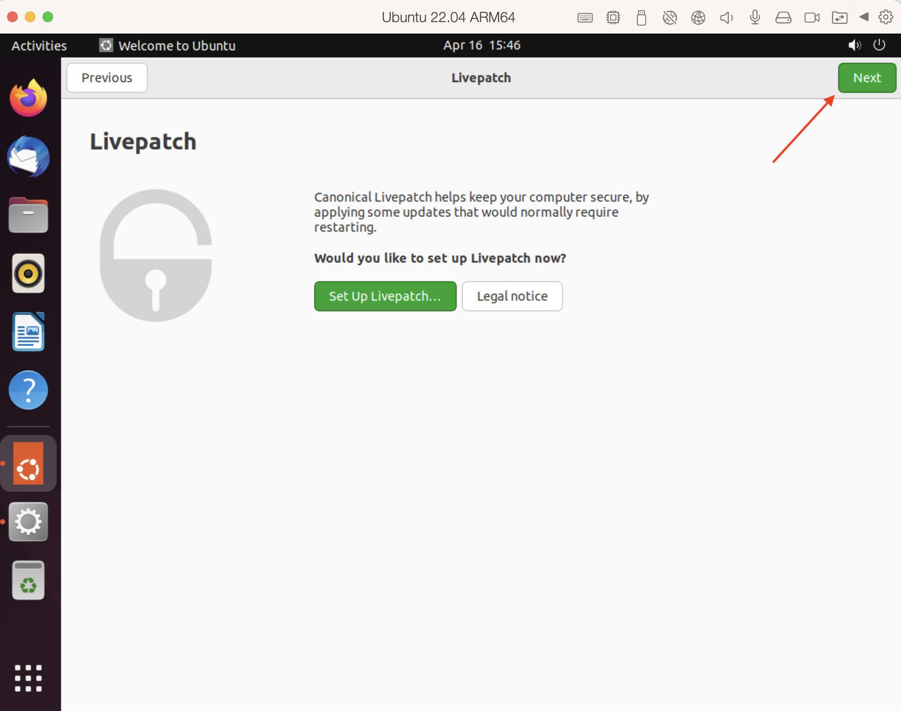🎉וסיימנו